CSE-191 Discrete Structures
Copy right©️ : Andrew Hughes (SUNY at Buffalo)
Introduction to Propositional Logic (9/2 Lec#1)
Outline
- Propositional Logic
The Foundations: Lagic and Proofs
- Rules of logic specify the precise meanings of mathematical statements
- Logic is the basis of all correct mathematical arguments (i.e.,proofs)
- Important in all of CS and CEN:
- Problem soving
- Software engineering (requirements specification, verification)
- Databases (relational algebras, SQL)
- Computer architecture (logic gates, verification)
- AI (automated theorem proving, rule-based ML)
- Computer security (threat modeling)
- …
Propositional Logic: Why do we care?
George Boole
Propositional Logic
Definition: A proposition is a declarative statement
Must be either TRUE or FALSE
Cannot be both TRUE or FALSE
An opinion of a specific person is a proposition
- Their opinion would determine the truth value
The bits 0/1 are used for F/T, respectively
- Digital logic uses 0/1 or LOW/HIGH or OFF/ON
- Computers use bits and logic gates for all computation
Prositions:
- Declarative statements
- Must be either true of false
Non-Prositions:
- Questions
- Commands
- Statements with unassigned variables
- …
Prositional Variables
Definition: Propositional variables arevariables that represent propositions
- Commonly used letters: p, q, r
- Or first letter of what we mean to represent
- A propositional variable may be associated with a specific proposition or left as a placeholder for an arbitrary proposition
- Propositional variables and logical operators are used to form compound propositions.
- Each compound prosition is a new proposition itself
Logical Operators
Logical operators allow the combination of propositions.
- Going forward: combine propositions to create new propositions.
- Going backwards: decompose proposition into atomics.
Negation operator
- The proposition
-pis read asnot p - The truth value of
-pis the opposite of the truth value ofp
Example:
p: I like apple.-p: I don’t like apple.
Binary logical operators
Unary operators: Transform one proposition into another.
Binary operators: Combine two propositions into one compound proposition.
The conjunction of p and q, denoted by p ʌ qp ʌ q means p and q
it’s only TRUE when p & q are both TRUE.
The disjunction of p and q, denoted by p V qp V q means p or q
it’s TRUE that one of them are TRUE or both TRUE.
The exclusive of p or q, denoted by p ⊕ qp ⊕ q means p or q, but not both
it’s TRUE that one of them are TRUE but not both TRUE.
The implication of p on q, denoted by p → qp → q means p implies q or if p, then q
it’s TRUE that as long as p is FALSE or q is TRUE.
The bidirectional implication between p and q, denoted by p ↔ qp ↔ q means p if and only if q
it’s only TRUE when p and q share the same truth value.
English Example
p: I like apple
q: I like banana
p ʌ q: I like apple and banana
p V q: I like apple or banana
p: The car costs less than $100
q: I will buy the car
p → q: If the car costs less than $100, I’ll buy the car.
Truth Tables (9/3 Lec#1)
- List all possible combinations of tryth values for the operands.
- List the resulting truth value in the rightmost column.
Truth table for negation
negation: The truth value of -p is the opposite of the truth value of p.
Only two cases to consider:
- Original proposition
pis FALSE:- New proposition
-pis a TRUE proposition.
- New proposition
- Original proposition
pis TRUE:- New proposition
-pis a FALSE proposition.
- New proposition
Truth table for negation:
| p | -p |
| — | — |
| F | T |
| T | F |
Number of binary logic operators
Q: We have introduced 5 binary logic operators. Are there more?
A: There are totally 16 binary logic operators:
- For any binary operator, there are 4 rowa in its truth table.
- Operator is defined by the F/T values in the 3rd column.
- Each entry in the 3rd column of the truth table has 2 possible values (F/T).
- Total number of truth tables w/ a unique 3rd column:
- 2 x 2 x 2 x 2 = 16
How did we construct the truth table?
We need a row for each possible combination of truth values.
- Need 2^n rows, where n is the number of propositional variables.
- For p V q we have 2 variables, so we need 2^2 = 4 rows.
- Fill half of the first column with F values, remainder with T.
- In the second column:
- For each group of rows in first column: fill half with F and half with T.
- Determine truth value of new proposition in the last column.
Precedence of Operators
| Operator | Precedence |
|---|---|
| () | 0 |
| - | 1 |
| ʌ | 2 |
| V | 3 |
| ⊕ | 4 |
| → | 5 |
| ↔ | 6 |
Tautologies and Logical Equivalence (9/4 Lec#2)
Definitions:
- A compound proposition that is always True is called a tautology.
- Two propositions
pandqare said to be logically equivalent if their truth tables are the same.- Namely,
pandqare logically equivalent if and only if the propositionp ↔ qis a tautology.
- Namely,
- if
pandqare logically equivalent , we writep ≡ qorp ↔ q.
Examples of Logical Equivalence
Ex:
Consider the following two compound propositions: p → q and q V -p.
Are p → q and q V -p logically equivalent?
| p | q | p → q | -p | q V -p | (p → q) ↔ (q V -p) |
|---|---|---|---|---|---|
| F | F | T | T | T | T |
| F | T | T | T | T | T |
| T | F | F | F | F | T |
| T | T | T | F | T | T |
- The columns for our propositions in question are identical.
- So (p → q) ↔ (q V -p) is a tautology
- Therefore, (p → q) and (q V -p) are logically equivalent.
Equivalence Laws
DeMorgan’s Law
-(p ʌ q) ≡ -p V -q
-(p V q) ≡ -p ʌ -q
Law of Distributivity
p V (q ʌ r) ≡ (p V q) ʌ (p V r)
p ʌ (q V r) ≡ (p ʌ q) V (p ʌ r)
Law of Contraposition
p → q ≡ -q → -p
Converse and Inverse
Converse
p → q to q → p
Inverse
p → q to -p → -q
Logical Equivalence Rules
| Equivalence | Name |
|---|---|
| p ʌ T ≡ p, p V F ≡ p | Identity laws |
| p V T ≡ T, p ʌ F ≡ F | Domination laws |
| p V p ≡ p, p ʌ p ≡ p | Idempotent laws |
| -(-p) ≡ p | Double negation law |
| p V q ≡ q V p p ʌ q ≡ q ʌ p |
Commutative laws |
| (p V q) V r ≡ p V (q V r) (p ʌ q) ʌ r ≡ p ʌ (q ʌ r) |
Associative laws |
| p V (q ʌ r) ≡ (p V q) ʌ (p V r) p ʌ (q V r) ≡ (p ʌ q) V (p ʌ r) |
Distributive laws |
| -(p ʌ q) ≡ -p V -q -(p V q) ≡ -p ʌ -q |
De Morgan’s laws |
| p V (p ʌ q) ≡ p p ʌ (p V q) ≡ p |
Absorption laws |
| p V -p ≡ T, p ʌ -p ≡ F | Negation laws |
Logical Equivalences Involving Conditional Statements
| p → q ≡ -p V q |
| p → q ≡ -q → -p |
| p V q ≡ -p → q |
| p ʌ q ≡ -(p → -q) |
| -(p → q) ≡ p ʌ -q |
| (p → q) ʌ (p → r) ≡ p → (q ʌ r) |
| (p → r) ʌ (q → r) ≡ (p V q) → r |
| (p → q) V (p → r) ≡ p → (q V r) |
| (p → r) V (q → r) ≡ (p ʌ q) → r |
Logical Equivalences Involving Biconditional Statements
| p ↔ q ≡ (p → q) ʌ (q → p) |
| p ↔ q ≡ q ↔ p |
| p ↔ q ≡ -p ↔ -q |
| p ↔ q ≡ (p ʌ q) V (-p ʌ -q) |
| -(p ↔ q) ≡ p ↔ -q |
Predicates and Quantifiers (9/9 Lec#3)
From Propositions to Predicates
- Consider the statement “X” is even
- Contains the variable X, so it is not a proposition
- Given a value for X, we can determine the truth value
- Once X is filled, sentence is TRUE or FALSE, but not both
- Contains the variable X, so it is not a proposition
- Sentences whose truth value is based on variables are predicates
Definition:
A predicate is a function that takes some variable(s) as arguments; It returns rither TURE or FALSE (but never both) for each combination of the argument values.
In contrast, a proposition is a function of 0 variables
- Propositions have no variables.
- Each proposition is either TRUE or FALSE (but not both)
Predicate variables are derived from an associated domain of discourse.
- Domain of discourse describes all allowable argument values.
Ex, Coffee has a nice flavor.
- Now we can consider this as a function of “Who said it?”
- C(x): x thinks coffee has a nice flavor.
Definition:
Given a predicate P(x), the domain of discourse (often referred to as the domain) is a set of all possible values for the variable x.
Predicates with multiple variables may have:
- multiple domains of discourse, one for each variable, or
- a single domain of discourse for all variables.
Quantifiers
Universal Quantification
Dedinition:
Suppose P(x) is apredicate on some domain.
- The universal quantification of P(x) is the proposition:
- “P(x) is true for all x in the domain of discourse D.”
- Written as: ∀x,P(x)
- Read as: “*For all**x*,P(x).”
- “P(x) is true for all x in the domain of discourse D.”
- The universal quantification of P(x) is the proposition:
∀x,P(x) is TRUE if P(x) is TRUE for every x in D.
∀x,P(x) is FALSE if P(x) is FALSE for some x in D.
An input that causes a universally quantified statement to evaluate to FALSE is called a counterexample.
Example
P(x): x + 2 =5, domain of discourse: {1,2,3}.
- ∀x,P(x) means: “for all x in {1,2,3}, x + 2 = 5.“
- ∀x,P(x) is FALSE (since 1 + 2 = 5, 2 + 2 = 5 are both FALSE).
Existential Quantification
Definition:
Suppose P(x) is a predicate on some domain of discourse.
- The existential quantification of P(x) is the proposition:
- “P(x) is true for some x in the domain of discourse D.”
- Written as: ∃x,P(x)
- Read as: “There exists x, P(x)“.
- “P(x) is true for some x in the domain of discourse D.”
- The existential quantification of P(x) is the proposition:
∃x,P(x) is TRUE if P(x) is TRUE for some x in D.
∃x,P(x) is FALSE if for every x in D, P(x) is FALSE.
An input that causes predicate to evaluate to TRUE is called a satisfying assignment.
Example
P(x): x + 2 =5, domain of discourse: {1,2,3}.
- ∃x,P(x) means: “for some x in {1,2,3}, x + 2 = 5.“
- ∃x,P(x) is TRUE (since 3 + 2 = 5 is TRUE).
Quantifiers and Their Variables (9/11 Lec#4)
Quantifier and Variable Mechanics
Example:
Suppose L(x,y): x loves y, where
the domain of x is all CSE 191 students and
the domain of y is the courses offered by UB CSE
L(x,y) has x as the first variable and y is the second variable.
- The position of the variable determines its domain.
- Here, we have x is a student and y is a course.
Suppose we were to write L(y,w).
- L(x,y) translates to: y loves w
- Here, we have y is a student and w is a course.
Pay close attention to where the variable enters the predicate:
- ∀w∃x,L(w,x) ʌ ∃y,z,L(y,z)
- w and y are students.
- x and z are courses.
Quantified Statements and English
Example:
Suppose L(x,y): x loves y, where
the domain of x is all CSE 191 students and
the domain of y is the courses offered by UB CSE
∃x,(L(x,CSE 191) ʌ L(x, CSE250)):
- A CSE 191 student loves both CSE191 and CSE250
∃x∃y∀z,((x != y) ʌ (L(x,z) → L(y,z))):
- There are different students x and y in CSE 191 such that if x loves a CSE course, then y loves it as well.
Every CSE course is loved by some student in CSE 191:
- ∀y∃x, L(x,y)
No student in CSE 191 loves CSE 191 and CSE 250:
- -∃x,(L(x,CSE191) ʌ L(x,CSE250)).
Translating Theorems
If x is an even number, then x + 1 is odd.
- Identify a domain and predicates:
- Domain: all integers.
- P(x) : x is an even number.
- Q(x) : x is an odd number/
- Quantified statement:
∀x,(P(x) → Q(x + 1))
- Identify a domain and predicates:
Every even number is a multiple of 2.
- Domain and predicates:
- Domain: all integers.
- R(x) : x is an even number.
- S(x) : x is a multiple of 2.
- Quantified statement:
∀y,(R(y) → S(y))
- Domain and predicates:
Every even number is a multiple of 2. (alternative)
- Domain and predicates:
- Domain: all integers
- T(x) : x is a multiple of 2.
- Quantified statement:
∀z, T(z)
- Domain and predicates:
Quantifier Negation
In general we have for any predicate P(x):
- -∀x,P(x) ≡ ∃x,-P(x) and -∃x,P(x) ≡ ∀x,-P(x)
Quantifier Negation Rule
Move the negation over a quantifier. Flip the quantifier passed.
∃flips to∀- -∃x,(…) becomes ∀x,-(…)
∀flips to∃- -∀x,(…) becomes ∃x,-(…)
E.g.: No CSE 191 student lives in Amherst:
- -∃x,(B(x) ʌ A(x)) ≡ ∀x,-(B(x) ʌ A(x))
Nested Quantifiers
How do sentences with multiple quantifiers work?
Definition:
- A logical expression with more than one quantifier that bind different variables in the same predicate is said to have nested quantifiers.
- Need to consider thier ordering and scope.
Nested Quantifiers Ordering
Recall:
Every CSE course is loved by some student in CSE 191:
∀y ∃x,L(x,y).
Does switching the ordering of quantifiers maintain the meaning?
- ∃x ∀y,L(x,y): Some CSE 191 student lovers every CSE course.
In general, we cannot switch the ordering and guarantee equivanlence.
Consecutive quantifiers of the same type can be reordered and maintain equivalence.
- Suppose Q(x,y,z) is an arbitary predicate:
- ∀i∀j∀k, Q(i,j,k) ≡ ∀j∀i∀k, Q(i,j,k) ≡ ∀k∀j∀i, Q(i,j,k) ≡ …
- ∃i∃j∃k, Q(i,j,k) ≡ ∃j∃i∃k, Q(i,j,k) ≡ ∃k∃j∃i, Q(i,j,k) ≡ …
We usually simplify consecutive variables with the same quantifier:
- ∀i∀j∀k, Q(i,j,k) ≡ ∀i,j,k,Q(i,j,k)
- ∃i∃j∃k, Q(i,j,k) ≡ ∃i,j,k,Q(i,j,k)
Note: the order variables enter Q(…) does not change.
Nested Quantifiers Scoping
Definition:
The portion of the formula a quantifier is covering is called the scope of the quantifier.
- The scope of the quantifier is the predicate immediately following.
- Precedence is just below parenthesis.
- Any variable that is not covered by a quantifier is called a free variable.
Consider the formula: ∀i ∃j, (P(i,j) → ∀k,Q(k))
- The scope of
∀iis the entire formula. - The scope of
∃jis the entire formula, minus∀i. - The scope of
∀kis limited to Q(k).
Consider:
∀i ∃j, (P(i,j) → ∀k,Q(k))
vs
∀i ∃j ∀k, (P(i,j) → Q(k))
Quantifiers can move as long as their scope doesn’t encompass additional quantifiers of a different type.✅
Consider:
∀i ∃j, (P(i,j) → ∀k,Q(k))
vs
∀i ∃j, (∀k,P(i,j) → Q(k))
- In the second formula, k in Q(k) is no longer bound by any quantifier.
- k is a free variable.
Ensure that any reordering doesn’t free variables originally covered.❌
Homework#1
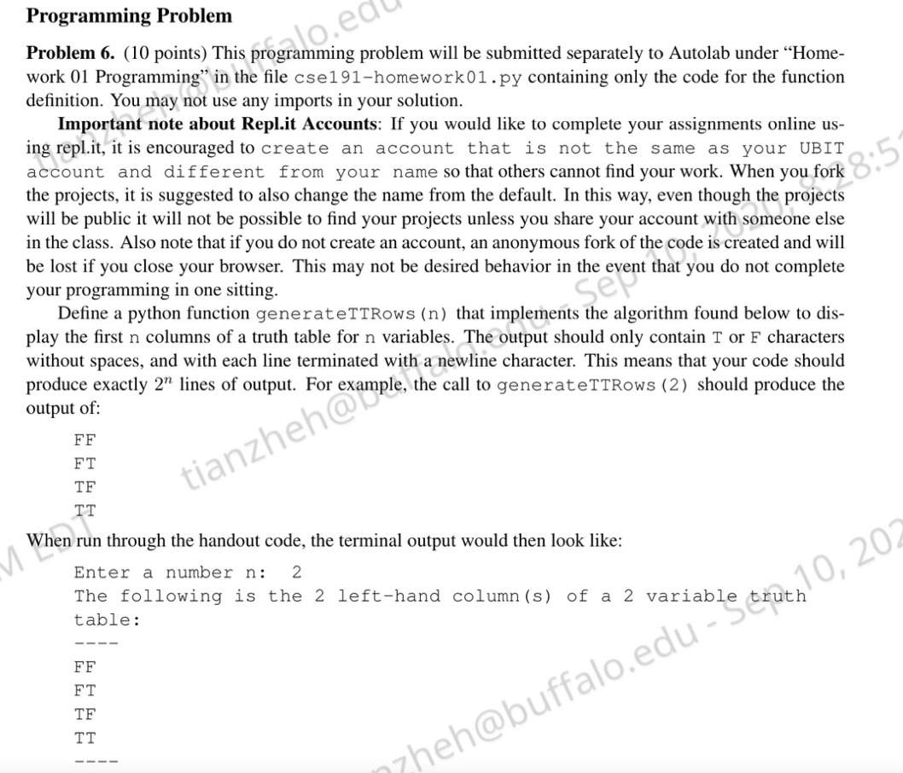
# Do not submit this file to Autolab. |
# DO NOT REMOVE THIS HEADER |
Logical Reasoning and Proof Methods
Logical Reasoning
Logical Reasoning Definition
- Differences from logical equivalence
- Statements derived are not always equivalent.
- Can be new knowledge.
- Multiple facts can be used to drive a new statement.
- Statements derived are not always equivalent.
Arguments are:
- A list of propositions, called hypotheses, and
- A final proposition, called the conclusion.
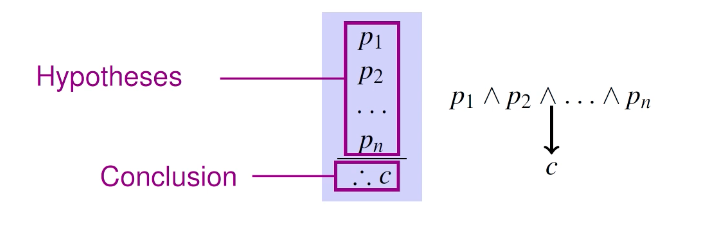
Definition:
- An argument is valid if:
- (p1 ʌ p2 ʌ … ʌ pn) → c is a tautology
- An argument is invalid if it is not valid.
Example
Prove that the following is a valid argument:
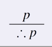Proving this argument valid is the same as proving that
p → pis a tautology.p p → p F T T T Logical reasoning proof:
- p is Hypothesis
Since we have arrived at our conclusion our proof is complete.
- Therefore, we have shown that this is a valid argument.
Another Simple Example
Consider the contrapositive as a logical argument:
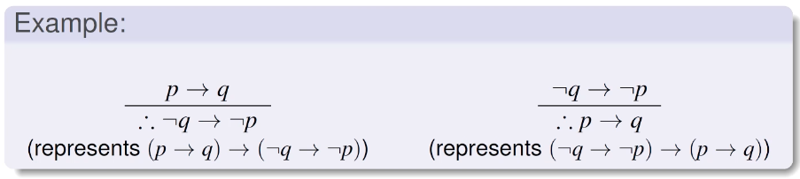
Proof of validity:
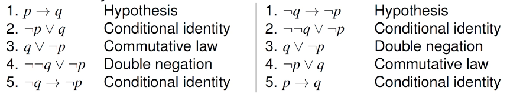
- Note: this is the logical equivalence proof we performed.
- Add line numbers for logical argument proofs.
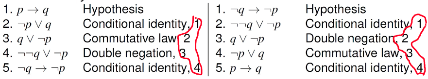
Logical Reasoning: Proof Definition
Definition
A logical proof of an argument is a sequence of steps, each of which consists of a proposition and a justification.
Each line should contain:
- a hypothesis (assumption)
- a proposition that is equivalent to a previous statement
- a proposition that is derived by applying an argument to previous statements.
Justifications should state
- hypothesis.
- the equivalence law used (and the line it was applied to)
- the argument used (and the line(s) it was applied to)
The last line should be the conclusion.
Invalid Argument
To prove an argument is invalid, we need a counterexample.
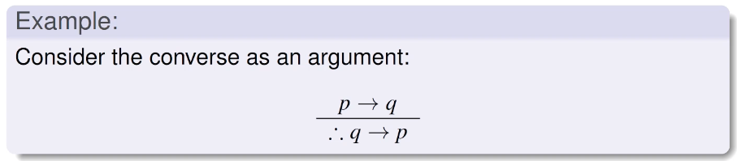
Proof of invalidity:
- Suppose
p: FALSE andq: TRUE. - Then *
p → qis TRUE, butq → pis FALSE. - Thus, the argument is invalid.
Counterexample: a situation where all hypotheses are TRUE and the conclusion is FALSE.
Logical Reasoning Rules
The following are a number of commonly used rules of inference:
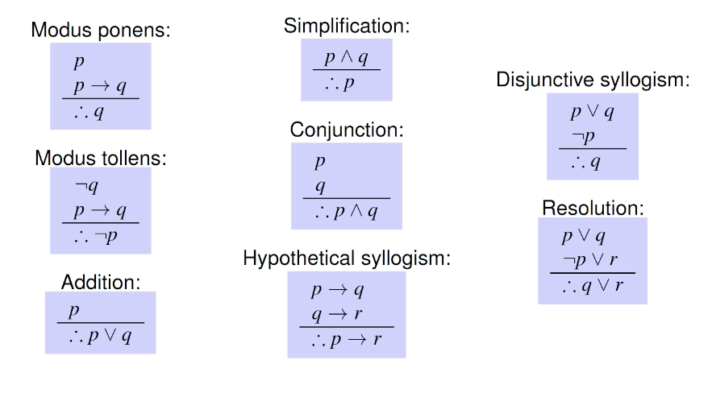
Introduction to Mathematical Proofs
Mathenatical Proofs
A mathematical proof is usually “informal”
- More formal than everyday language, less foraml than logical proofs.
- More than one rule may be used in step.
- (Some) step may be skipped.
- Axioms may be assumed
- Rules for inference need not be explicitly stated.
- Proofs must be a self-contained line of reasoning.
- Statements used must be
- facts (axioms)
- theorems, lemmas, corollaries (previously proved statements), or
- statements that can be derived from the above.
- You cannot use something as fact within a proof if you are not certain it is.
- Statements used must be
Terminology
- Theorem: statement than can be shown true.
- Proposition: less important theorem.
- Lemma: less important theorem used to prove other theorems.
- Corollary: theorem that trivially follows another theorem.
- Conjecture: statement that is proposed to be true, but has not been proved.
- Axiom: statement assumed to be true (i.e., true statement that does not need a proof)
- Most axioms, theorems, etc, are properties concerning all elements over some domain.
- E.g., All perfect squares are non-negative.
- The domain should be clear from context or explicitky stated.
Example
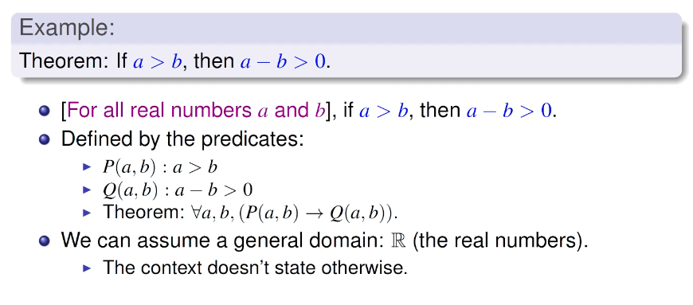
Proof by Exhaustion
Definition
A proof by exhaustion for p → q starts by considering each element of the domain of discourse and showing that the predicate is true.
- Only a useful method when dealing with a small domain.
(non-)Example
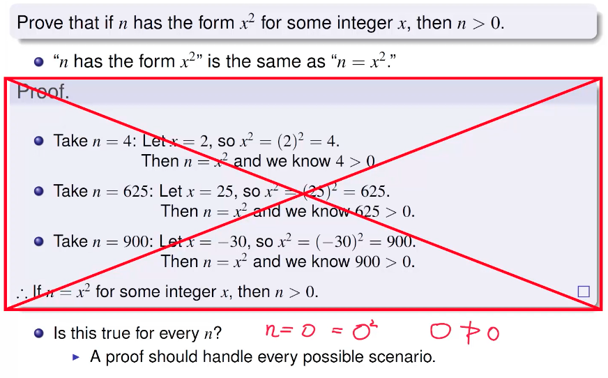
Disproof by Counterexample
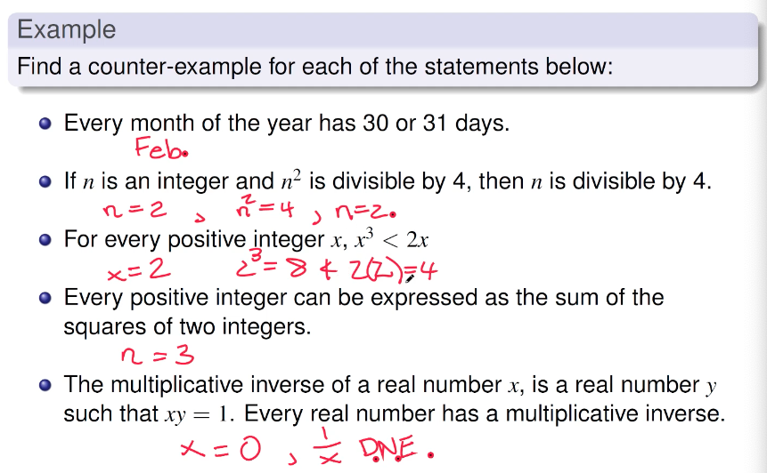
Direct Proofs
Definition
A direct proof for P(x) → Q(x) starts by assuming P(x) (for x) as fact and finishes by establishing Q(x).
- Make use of axioms, previously proven theorems, inference rules, etc…
- Same approach was used to prove that a logical argument is true.
- P(x) is the hypothesis.
- Q(x) is the conclusion.
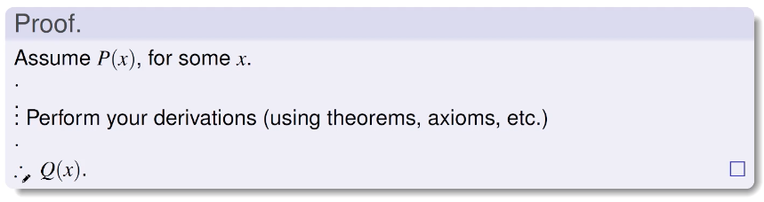
Example
Example1:
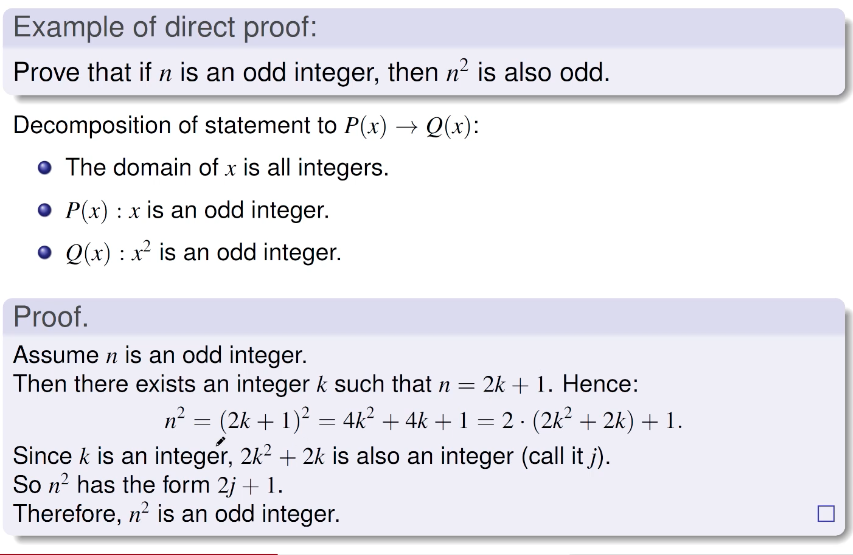
Example2:
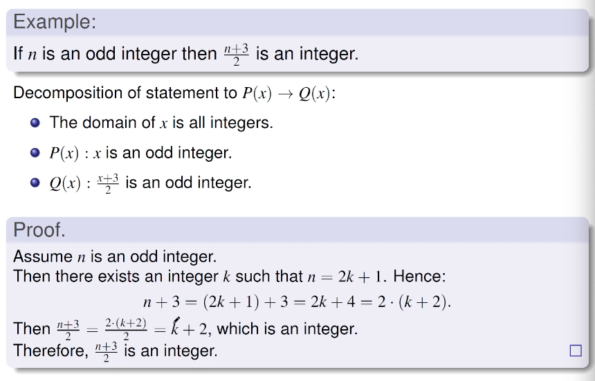
Proof by Contraposition
Recall that p → q is logically equivalent to -q → -p, its contrapositive
Definition
A proof by contraposition for P(x) → Q(x) is proof P(x) → Q(x) where:
- write a direct proof for -Q(x) → -P(x) and
- conclude that the contrapositive of -Q(x) → -P(x) is also true.
- Proof layout:
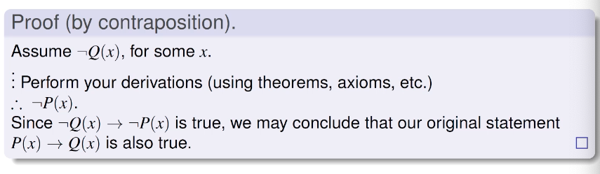
Example
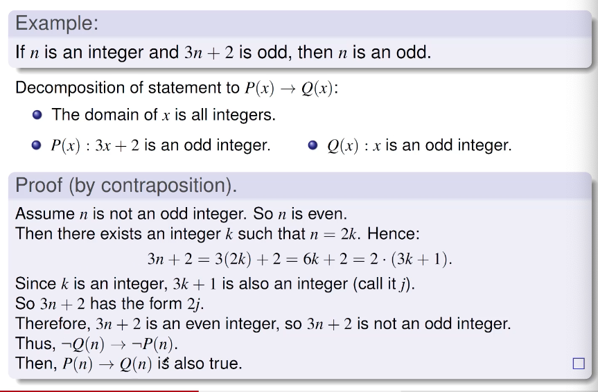
Proof by Exhaustion
For a proof by exhaustion to work, cases must exhaust, or consider, the entire domain.
- Overlap is OK, but may introduce redundant work.
- For the domian of integers,
- n >= 0, n = 0, and n <= 0 are exhaustive cases, but have overlap.
- Bettter: n >= 0 and n < 0 or n > 0 and n <= 0
- For the domian of integers,
- Non-exhaustive cases leave the possibility for error:
Note the contrapositive is:
- If x and y are not both even, then x+y and xy are not both even.
Proof(by contraposition):
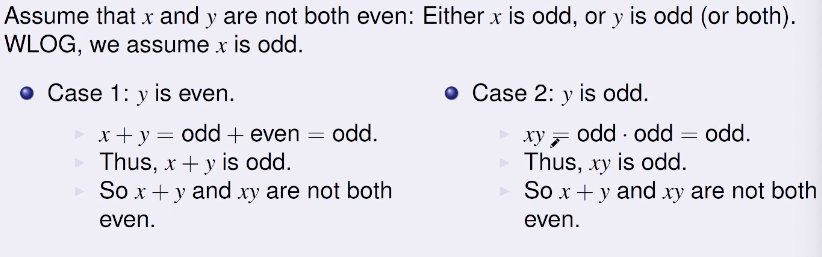
In both cases, we get that x+y and xy are not both even.
Example 2
Prove that if n is an integer, then n^2 >= n
WLOG
Without Loss Of Generality (不失一般性)
被用在证明中将前提条件明确到个例上时，说明该个例能代表普遍情况，而非一种特例。
Sets
A set is a collection of objects that do NOT have a order.
- Each object is called an element
- We write:
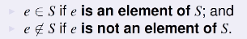
How to describe a set:
- List all elements.
- E.g., {1,2,3}
- This is called roster notation - list all contents
- Provide a description of what the elements look like.
- E.g., 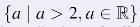
- This is called set builder notation - describe contained elements.
Common Sets
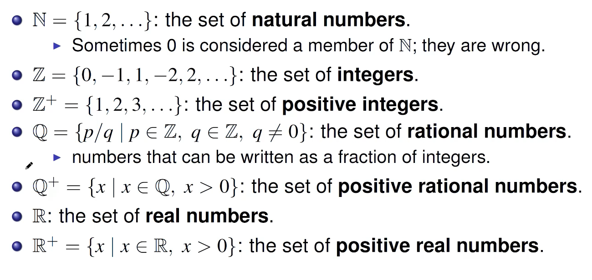
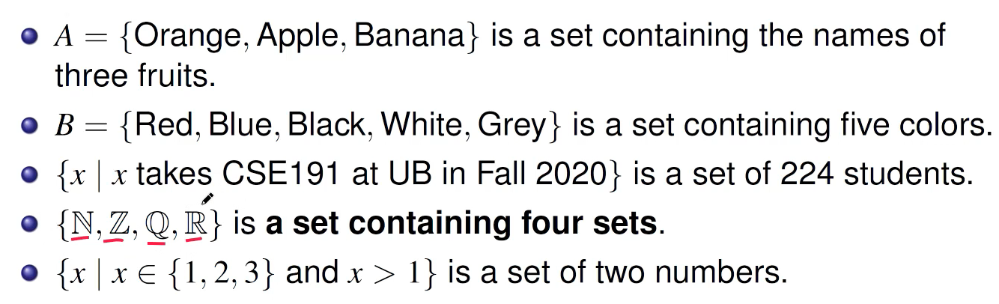
Universal Set
When discussing sets, there is always a universal set U involved, which contains all objects under consideration.
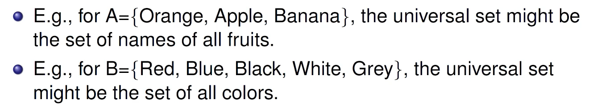
In many casesm the universal set is implict and omitted from discussion.
Russell’s Parabox
Is there a universal set covering all universes?
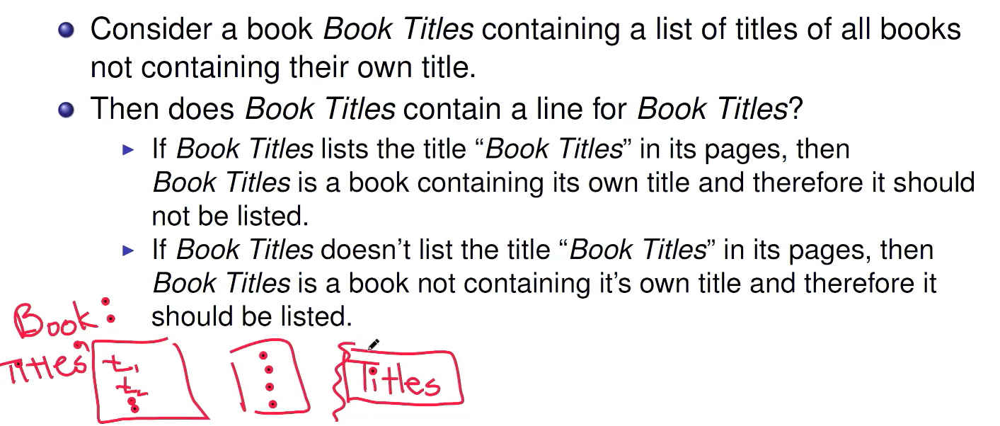
Cardinality
Definition:
If a set A contains exactly n elements, where n is a non-negative integer, then A is a finite set.
- n is called the cardinality of A
- Denoted by |A| = n.
- For a finite set, its cardinality is the “size” of A.
Definition:
The empty set is the set that contains no elements.
Denoted by {}
Has size 0
Do we count duplicate items?
- NO. We only count unque items for cardinality
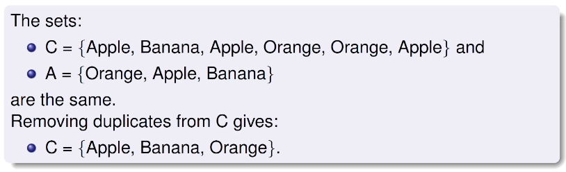
∅ = 0
{∅} = 1
Cardinality(for infinite sets)
Definition:
If A is not finite, then it is an infinite set.
- What is the cardinality of an infinite set?
- Do all infinite sets have the same size?
- Appears to not be the case.
- Are there more rational numbers than integers?
- Are there are more real numbers than rational numbers?
- Only one of these is true.
- Appears to not be the case.
Subsets
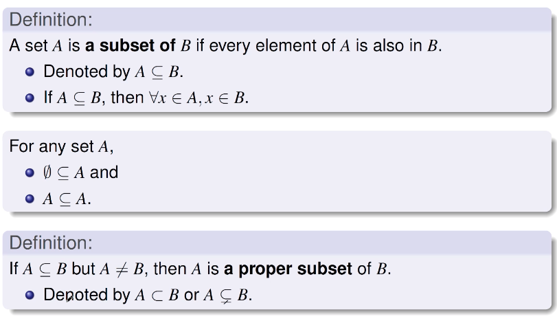
Examples
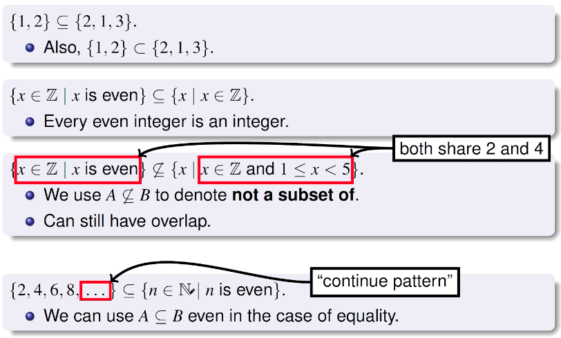
Equal Sets
Definition:
Two sets are equal if and only if they have the same elements.
- Denoted by A = B.
- Order of elements irrelevant.
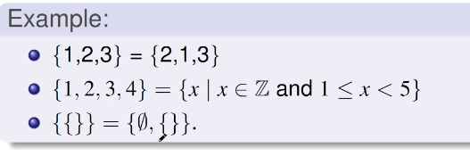
Set Equality
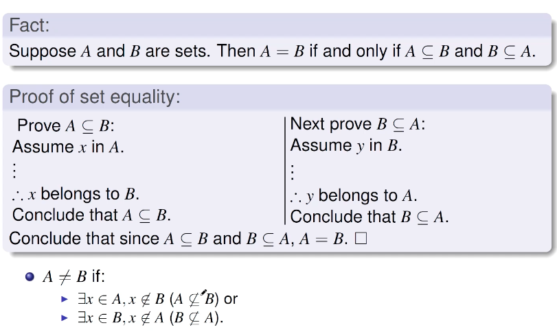